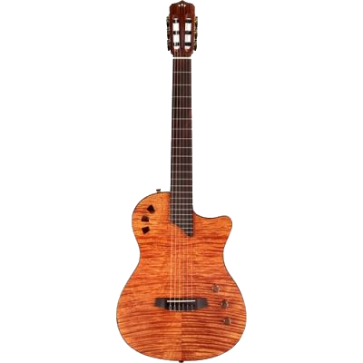

Gitarın Sesi ve Açıklaması İçin Tıkla
Strat Gitar
Nylon Gitar
Humbacker Gitar
Single Gitar
Anasayfa
Nylon Gitar Nedir
Kimler Kullanır
Fiyatları Ve Özellikleri

Genellikle çelik telli akustik gitardan daha küçük olan naylon telli gitar,
tutması daha kolay ve telleri çalması daha rahat olduğu için yeni başlayanlar tarafından daha çok tercih edilir